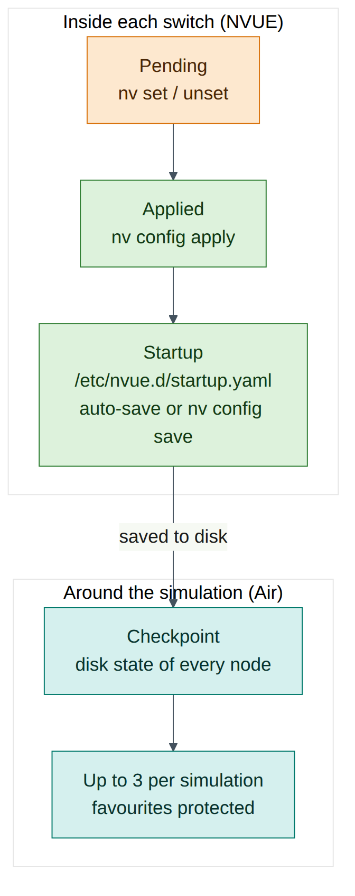
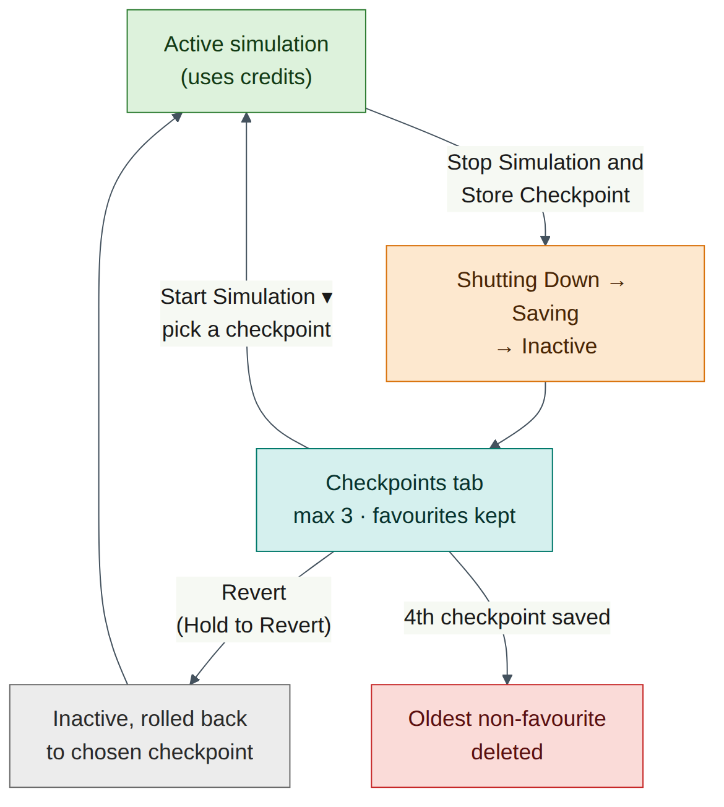
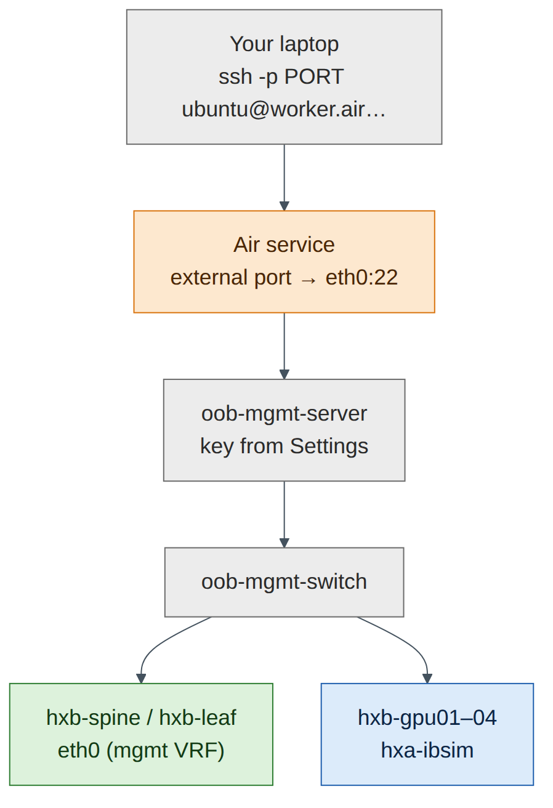
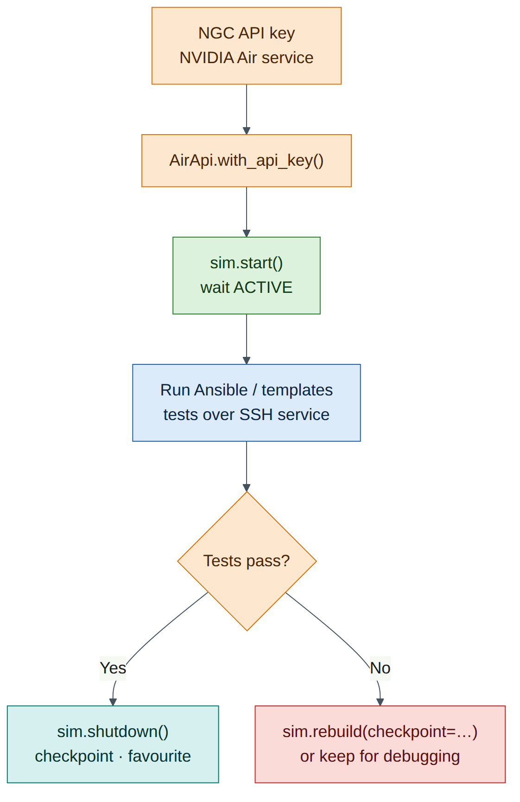

Lab 6 — Air Power Skills: Checkpoints, Cloning, Services and the SDK¶
Companion to the NCP-AIN Certification Guide
This free lab is part of the hands-on companion to NCP-AIN Certification Guide by Vakeesan Thevarajah (Cloudfoxy Ltd). The book explains the theory, design choices and hardware behaviour behind every step. Get the book Free sample
Lab at a glance¶
| Book chapters | Chapter 9 (Lab simulation with NVIDIA Air) · Chapter 4 (NVUE startup configuration) · Chapters 21–22 (testing templates and Ansible in a twin) |
| Exam objectives | 2.4 Use NVIDIA Air to simulate network environments · supports 6.1/6.2 (testing automation in a digital twin) |
| Time | 75–90 minutes |
| Air resources used | The whole helix-b-air simulation (about 26 vCPU while running). Some tasks run with the simulation stopped. Your own computer for SSH and the Python SDK |
| Prerequisite labs | Lab 0 (topology imported, OOB network enabled). Labs 1–5 recommended, so there is configuration worth protecting |
Objectives¶
By the end of this lab you will be able to:
- Save switch configuration so it survives a restart, and stop a simulation with a checkpoint.
- Work with checkpoints: start from one, mark a favourite, and revert a simulation to one.
- Clone a simulation and export its topology as JSON.
- Read the History tab and estimate how many compute hours (credits) your work uses.
- Reach the simulation directly from your laptop with an SSH service on
oob-mgmt-server. - Configure servers automatically with node instructions and cloud-init.
- Use the DSX Air Python SDK (
nv-air-sdk) to list, start and sleep simulations from a script.
Background¶
By Lab 5 you have a working EVPN fabric that took hours to build. This lab is about protecting that work and using Air efficiently. A free-trial account has 10,000 compute hours for a year and a 60 vCPU / 60 GiB concurrent limit. A simulation that runs all night uses credits whether you type anything or not. Stopping it with a checkpoint costs nothing while it's stopped and brings you back to exactly where you were.
Air saves work at two layers, and you need both. Inside each switch, NVUE holds the running (applied) configuration and a startup configuration in /etc/nvue.d/startup.yaml (Chapter 4). Only the startup configuration is loaded at boot. Around the whole simulation, Air stores checkpoints: snapshots of every node's disk state. When you stop a simulation with Stop Simulation and Store Checkpoint, Air shuts the nodes down, saves their disks and releases the compute resources. Air keeps up to three checkpoints per simulation. The oldest non-favourite checkpoint is deleted automatically when a new one is saved, so mark the important ones as favourites.
The last part of the lab turns Air into something you can drive from code. The Services tab publishes a port on a node (usually SSH on oob-mgmt-server) to the internet. Node instructions and cloud-init configure servers automatically. The Python SDK lets a CI pipeline (Chapter 22) create, start, test and sleep simulations without anyone opening a browser.

Version note
The DSX Air user interface changes often. The labels in this lab (Stop Simulation and Store Checkpoint, Checkpoints, History, Services, Enable SSH, Settings, Node Instructions) come from the DSX Air user guide at the time of writing. If a button has moved or been renamed, look for the same function nearby, and check docs.nvidia.com/dsx-air/simulation-management.
Step-by-step¶
Task 1 — Save configuration on every switch¶
A checkpoint saves disks, not running processes. Anything that exists only in a switch's applied configuration, and not in startup.yaml, might not come back after a stop and start. Make sure every switch's startup configuration matches its applied configuration.
- Open the console of
oob-mgmt-server(or SSH to it) and log in asubuntu. -
Connect to the first leaf and check whether anything is pending or unsaved:
ubuntu@oob-mgmt-server:~$ ssh cumulus@hxb-leaf-r1 cumulus@hxb-leaf-r1:mgmt:~$ nv config diff cumulus@hxb-leaf-r1:mgmt:~$ nv config diff applied startupExpected output (illustrative): both commands print nothing. The first shows pending changes that haven't been applied. The second shows differences between applied and startup.
-
If the first command shows output, you have pending changes. Review them, then apply or detach them (
nv config applyornv config detach). If the second shows output, save: -
Confirm that auto-save is on, so future applies are saved automatically:
Expected output (illustrative):
-
Repeat on every switch. A loop from
oob-mgmt-serveris faster. It assumes the SSH key set-up from Lab 0; otherwise you are asked for the password on each switch:ubuntu@oob-mgmt-server:~$ for sw in hxb-spine01 hxb-spine02 hxb-leaf-r1 hxb-leaf-r2 hxb-leaf-r3 hxb-leaf-r4; do echo "== $sw"; ssh cumulus@$sw "nv config save && nv config diff applied startup | wc -l" doneExpected output (illustrative): each switch prints its name followed by
0(no lines of difference). -
On the Ubuntu servers, confirm the tenant addresses from Lab 5 are in a netplan file, not only added with
ip addr add:
Checkpoint:
- Every switch shows no difference between applied and startup.
- Auto-save is enabled (the default in Cumulus Linux 5.x).
- Server addresses are persistent (netplan), or you have noted which ones you will re-add after a restart.
Exam focus (2.4)
A checkpoint is only as good as what is on disk. The NVUE answer to "what makes a change survive a reboot?" is that it is in the startup revision (/etc/nvue.d/startup.yaml). nv config save writes the applied configuration to startup. It does not apply pending changes.
Task 2 — Stop the simulation and store a checkpoint¶
- In the Air UI, open the helix-b-air simulation.
- In the action bar at the top of the page, click Stop Simulation and Store Checkpoint.
- Watch the status move through Shutting Down and Saving to Inactive. This can take several minutes for 13 nodes.
-
Open the Checkpoints tab. You should see one checkpoint with the time you stopped the simulation.
Warning
The drop-down next to the stop button also offers Stop Simulation Without Checkpoint. That discards everything since the last checkpoint. Use it only when you really want to throw work away, for example after a destructive test.
Checkpoint:
- The simulation state is Inactive.
- The Checkpoints tab shows a new checkpoint of type standard.
Task 3 — Mark a favourite and start from a checkpoint¶
Air keeps at most three checkpoints per simulation. When a fourth is saved, the oldest checkpoint that isn't a favourite is deleted. Protect your "known good after Lab 5" state now.
- On the Checkpoints tab, mark the checkpoint you just created as a favourite (use the favourite control on its row). Its Type column changes from standard to Favorites. If you can rename it, call it
lab05-evpn-good. - Click the drop-down arrow next to Start Simulation. A list of checkpoints appears.
- Select the checkpoint and start the simulation.
-
When the state is Active, log in to a leaf and check that the EVPN configuration from Lab 5 is present:
cumulus@hxb-leaf-r1:mgmt:~$ nv config diff applied startup cumulus@hxb-leaf-r1:mgmt:~$ sudo vtysh -c "show bgp summary" cumulus@hxb-leaf-r1:mgmt:~$ sudo vtysh -c "show evpn vni"Expected output (illustrative): the BGP summary lists both unnumbered neighbours (
swp31,swp32) as Established andshow evpn vnilists L2 VNIs 10110, 10111, 10210, 10211 and L3 VNIs 104001, 104002.
Checkpoint:
- The favourite checkpoint is marked and named.
- The simulation came back with the Lab 5 configuration intact.
Field note
Checkpoint before every risky lab, not only at the end of the day. Before Lab 12 (Ansible) or Lab 13 (capstone faults), stop with a checkpoint, favourite it, and start again. It costs a few minutes and saves an evening of rebuilding.

Task 4 — Break something, then revert¶
Revert rolls the simulation back to a checkpoint. It needs the simulation to be Inactive and to have at least one checkpoint.
-
With the simulation active, make a deliberate mess on
hxb-leaf-r1:cumulus@hxb-leaf-r1:mgmt:~$ nv unset vrf default router bgp neighbor swp31 cumulus@hxb-leaf-r1:mgmt:~$ nv unset vrf default router bgp neighbor swp32 cumulus@hxb-leaf-r1:mgmt:~$ nv config apply -y cumulus@hxb-leaf-r1:mgmt:~$ sudo vtysh -c "show bgp summary"Expected output (illustrative): no neighbours listed. Leaf-r1 has dropped out of the fabric, and auto-save has written the broken configuration to startup.
-
Stop the simulation without a checkpoint (drop-down next to the stop button → Stop Simulation Without Checkpoint). You don't want to keep the broken state.
- When the simulation is Inactive, click the revert icon in the action bar, choose the
lab05-evpn-goodcheckpoint, and press and hold Hold to Revert until it completes. - Start the simulation and re-check
show bgp summaryonhxb-leaf-r1.
Checkpoint:
- Both BGP neighbours on
hxb-leaf-r1are Established again. - You understand the difference: start from a checkpoint picks a state for this run; revert rolls the simulation back to that checkpoint.
Warning
You can't revert an active simulation, and the revert option needs at least one checkpoint. If the revert icon is greyed out, check the state first.
Task 5 — Clone the simulation¶
A clone is a second, independent copy of the simulation. It's useful for a "what if" test that you might want to throw away, while the original stays safe.
- From the simulation list (or the simulation's action menu), choose the clone option. At the time of writing, Air added "clone a simulation directly from the UI" in its August 2026 release. Look for Clone or Duplicate in the simulation's menu (check on your release).
- Name the clone
helix-b-air-whatif. -
Don't start both at once. Check the quota arithmetic first:
Resource helix-b-air (approx.) Two copies Free-trial limit vCPU 26 52 60 Memory about 46–48 GiB about 94 GiB 60 GiB
Two copies fit the vCPU limit but not the memory limit. Stop the original with a checkpoint before starting the clone.
Checkpoint:
- The clone appears in your simulation list.
- You know that only one copy of this topology can run at a time on a free-trial account.
Field note
If your UI has no clone option, the same result comes from exporting the topology (Task 6) and importing it as a new simulation. An imported topology starts from fresh images, not from your checkpoints, so re-apply configuration from saved startup.yaml files or your Lab 11/12 automation.
Task 6 — Export the topology¶
- Open the Topology tab of the original simulation.
- Click the Export icon in the toolbar. Air downloads the topology as a JSON file.
- Open the file in a text editor and find
hxb-leaf-r1, its OS image, its vCPU and memory, and its links. - Commit the file to the Git repository you will use for Lab 11 and Lab 12, for example as
air/helix-b-air.json.
Checkpoint:
- You have a JSON file that describes the nodes and links (not the configuration inside them).
- It is under version control next to your templates and playbooks.
Exam focus (2.4)
Air simulations can be built with the UI builder, from a DOT or JSON topology file, or from a pre-built demo. An exported topology file is how a digital twin stays in step with the production design (Chapter 9).
Task 7 — Read the History tab and estimate credits¶
- Open the History tab of the simulation. Each entry has a Timestamp, Actor, Category (INFO, WARNING or ERROR) and Description.
- Find the events from Tasks 2–4: the stop, the checkpoint save, the revert and the start. Note who (Actor) did each one.
-
Estimate what one hour of this lab costs. DSX Air bills in compute hours. One compute hour is 1 vCPU for 1 hour, or 8 GB of memory for 1 hour, and the two are counted separately.
Item Working vCPU per hour 12 nodes × 2 vCPU + oob-mgmt-switch≈ 26 vCPU → about 26 compute hours per hourMemory per hour about 46–48 GB ÷ 8 ≈ 6 compute hours per hour Total about 32 compute hours per running hour Free-trial allowance 10,000 ÷ 32 ≈ 310 hours of running time
A simple rule of thumb for planning is vCPU × hours, and then add about a quarter for memory on this topology. An evening of three hours uses about 100 compute hours. Leaving it running for a week by mistake uses over 5,000.
- Look for the rate or usage display in the UI. Air's August 2026 release notes say the UI "now shows the rate required to run a simulation" (check where it appears on your release). Compare it with your estimate.
- Open the simulation's Edit dialog and look at Sleep date. Free-trial simulations get an automatic sleep date that can't be removed. When it is reached, Air saves the simulation's state and stops it.
Checkpoint:
- You can find a stop, checkpoint and revert event in History.
- You have a credit estimate for one hour and one evening of work.
Warning
The Sleep date is a safety net, not a plan. Stop the simulation yourself at the end of each session, with a checkpoint.
Task 8 — SSH from your laptop with a Service¶
The console in the browser works, but a proper SSH session from your laptop is faster and lets you copy and paste freely. Password authentication is disabled on oob-mgmt-server by default, so you must add a public key first.
-
On your laptop, create a key if you don't have one, and print the public half:
-
In the Air UI, click your user name, choose Settings, and find the SSH keys section. Fill in Name (for example
laptop) and Public Key (paste the wholessh-ed25519 …line), then select Add. - Keys you add are included automatically in the simulation's authorised keys on
oob-mgmt-server. If the simulation was already running, stop and start it (or restartoob-mgmt-server) if the key doesn't work straight away (check on your release). - Open the simulation's Services tab and click Enable SSH. This is only available when the OOB network is enabled. (The same tab has + New Service for other ports, with the fields Service Name, Interface, Service Type and Service Port.)
-
Air shows an external host name and port for the service, with a ready-made command. It looks like this (illustrative):
-
Run the command shown in your Services tab. From
oob-mgmt-server, go on to any node by name:
Checkpoint:
- You can SSH from your laptop straight to
oob-mgmt-serverwith your key. - From there, you can reach every node by host name.

Warning
A published SSH service is reachable from the internet. Keep password authentication disabled, use keys only, and disable the service when you no longer need it.
Task 9 — Configure servers automatically: node instructions and cloud-init¶
In Labs 3 and 5 you configured each server by hand. Air offers two ways to do this automatically.
| Method | When it runs | How you add it | Best for |
|---|---|---|---|
| Node instructions | After the node boots, run by the Air agent on the node | UI: Nodes tab → ⋮ menu on the node → Node Instructions (or right-click the node on the Topology canvas). Also the instructions API | Changes to an existing, running simulation |
| Cloud-init | On the node's first boot (NoCloud data source) | API or SDK: create UserConfig objects (user-data, meta-data) and assign them to nodes | Building servers from scratch, reproducibly |
Air-provided generic/ubuntu images include cloud-init. Assign cloud-init configuration before a node's first boot. Assignments made after a node has booted take effect only when the node is rebuilt.
Part A — a node instruction for hxb-gpu01
- In the Nodes tab, open the ⋮ menu for
hxb-gpu01and choose Node Instructions. -
Create a shell-type instruction (choose the shell or script option the dialog offers; executor names vary by release) with this content. It makes the Lab 5 AURORA addresses persistent and installs the RDMA tools used in Labs 3 and 9:
#!/bin/bash cat > /etc/netplan/60-helix.yaml <<'EOF' network: version: 2 ethernets: eth1: addresses: [172.16.10.101/24] routes: [{to: 172.16.0.0/16, via: 172.16.10.1}] eth2: addresses: [172.16.11.101/24] EOF chmod 600 /etc/netplan/60-helix.yaml netplan apply apt-get update && apt-get install -y rdma-core ibverbs-utils perftest -
Leave wait for network at its default (enabled). With the OOB network enabled, the Air agent waits until it can reach
oob-mgmt-serverbefore it runs the instruction. These network-readiness settings can't be changed after the instruction is created. - Save the instruction and watch it run (the node's instruction status shows when it has completed).
-
Check the result:
Expected output (illustrative):
Warning
The routes in the example assume the AURORA design from Lab 5 (a route to the other tenant subnets through the anycast gateway). Adjust them to match what you built. If eth1 and eth2 already have these addresses in another netplan file, remove the duplicate first.
Part B — cloud-init with the SDK (optional, for a new simulation)
Cloud-init is the cleaner choice when you build a new simulation, for example the clone from Task 5 before its first start, or a CI simulation in Lab 12. The user-data file is standard #cloud-config:
#cloud-config
package_update: true
packages: [rdma-core, ibverbs-utils, perftest, jq]
write_files:
- path: /etc/netplan/60-helix.yaml
permissions: '0600'
content: |
network:
version: 2
ethernets:
eth1: {addresses: [172.16.10.102/24]}
eth2: {addresses: [172.16.11.102/24]}
runcmd:
- netplan apply
The SDK (Task 10) creates the configuration and assigns it to a node. This follows the DSX Air SDK cloud-init example:
from pathlib import Path
from air_sdk import AirApi
from air_sdk.endpoints import UserConfig
api = AirApi.with_ngc_config()
sim = next(s for s in api.simulations.list() if s.name == "helix-b-air-whatif")
node = next(n for n in sim.nodes.list() if n.name == "hxb-gpu02")
user_data = api.user_configs.create(
name="hxb-gpu02-userdata",
kind=UserConfig.KIND_CLOUD_INIT_USER_DATA,
content=Path("hxb-gpu02-user-data.yaml"),
)
meta_data = api.user_configs.create(
name="hxb-gpu02-metadata",
kind=UserConfig.KIND_CLOUD_INIT_META_DATA,
content="instance-id: hxb-gpu02\nlocal-hostname: hxb-gpu02\n",
)
sim.node_bulk_assign(nodes=[{"node": node, "user_data": user_data, "meta_data": meta_data}])
Checkpoint:
hxb-gpu01has its tenant addresses and the RDMA tools installed by a node instruction.- You can explain when to use node instructions (running simulation) and when to use cloud-init (first boot).
Version note
The sim.nodes.list() call and the node name attribute follow the SDK's naming pattern, but this exact combination was not tested for this guide (check on your release, at docs.nvidia.com/dsx-air/sdk). The rest of the example is taken from NVIDIA's cloud-init SDK example.
Task 10 — Drive Air from Python with the SDK¶
The DSX Air SDK is the nv-air-sdk package. It needs Python 3.10 or later and authenticates with an NGC API key that has the NVIDIA Air service selected.
-
Create an API key. Sign in to NGC, generate a Personal API key (see the NGC user guide, "Generating a Personal API Key"), and select NVIDIA Air in the services list. The key starts
nvapi-. Copy it once; NGC doesn't show it again.Version note
Older Air documentation and the older
air-sdkpackage used an API token created in the Air UI and a user name and password style login. The current DSX Air SDK uses NGC keys:AirApi.with_api_key(…),AirApi.with_ngc_config()(reads~/.ngc/config), orAirApi.with_device_login(…). Confirm the method for your account at docs.nvidia.com/dsx-air/authentication and docs.nvidia.com/dsx-air/sdk. -
Install the SDK on your laptop, in a virtual environment. Run it on your laptop, not on
oob-mgmt-server: a script that sleeps the simulation would cut off the machine it runs on.you@laptop:~$ python3 -m venv ~/air-venv you@laptop:~$ source ~/air-venv/bin/activate (air-venv) you@laptop:~$ pip install nv-air-sdk (air-venv) you@laptop:~$ export AIR_API_KEY='nvapi-…your key…'AIR_API_KEYis simply the variable name this lab uses. It keeps the key out of the script and out of Git. -
Write the script. Save it as
helix_air.py:#!/usr/bin/env python3 """List, start and sleep DSX Air simulations (Lab 6).""" import os import sys from air_sdk import AirApi, SimState api = AirApi.with_api_key(api_key=os.environ["AIR_API_KEY"]) def list_sims(): for sim in api.simulations.list(): print(f"{sim.name:<28} {str(sim.state):<12} {sim.id}") def find(name): for sim in api.simulations.list(): if sim.name == name: return sim sys.exit(f"No simulation called {name!r}") def start(name): sim = find(name) sim.start() sim.wait_for_state(SimState.ACTIVE, error_states=SimState.INACTIVE) print(f"{name} is ACTIVE") def sleep(name): sim = find(name) sim.shutdown() # stores a checkpoint unless create_checkpoint=False sim.wait_for_state(SimState.INACTIVE) print(f"{name} is INACTIVE, checkpoint stored") for cp in sim.checkpoints.list(): print(f" checkpoint {cp.name} (id={cp.id}) state={cp.state}") if __name__ == "__main__": if len(sys.argv) < 2 or sys.argv[1] not in ("list", "start", "sleep"): sys.exit("usage: helix_air.py list | start <sim> | sleep <sim>") if sys.argv[1] == "list": list_sims() elif sys.argv[1] == "start": start(sys.argv[2]) else: sleep(sys.argv[2]) -
Run it.
Expected output (illustrative):
(air-venv) you@laptop:~$ python3 helix_air.py sleep helix-b-air (air-venv) you@laptop:~$ python3 helix_air.py start helix-b-airExpected output (illustrative): the sleep command waits several minutes, prints
helix-b-air is INACTIVE, checkpoint storedand lists the checkpoints. The start command waits until the nodes are up and printshelix-b-air is ACTIVE. -
Open the History tab. The API calls appear as events with your account as the Actor.
Checkpoint:
listshows your simulations with their state.sleepcreates a checkpoint, the same as Stop Simulation and Store Checkpoint in the UI.- You know the other SDK calls that exist for CI:
sim.shutdown(create_checkpoint=False),sim.rebuild(checkpoint=cp.id),sim.export(),sim.get_history(), andcp.update(name=…, favorite=True).

Field note
Put a sleep step in the pipeline's clean-up stage so it runs even when tests fail. A failed CI run that leaves a 26 vCPU simulation running overnight uses around 400 compute hours.
Verify¶
- Every switch shows no difference in
nv config diff applied startup. - You stopped the simulation with Stop Simulation and Store Checkpoint and saw a new checkpoint.
- One checkpoint is a favourite, named
lab05-evpn-good. - You started from a checkpoint, and reverted an inactive simulation to one.
- A clone exists, and you know that only one copy can run at a time on a trial account.
- The topology JSON is exported and committed to Git.
- You can find stop, checkpoint and revert events in History, and you have a credit estimate.
- You can SSH from your laptop to
oob-mgmt-serverthrough the SSH service. - A node instruction configured
hxb-gpu01. -
helix_air.py list,startandsleepwork.
Break and fix¶
Fault 1 — "My changes disappeared after the restart"¶
Symptom: You changed hxb-leaf-r2 (for example nv set interface swp1 link mtu 9000), stopped the simulation with a checkpoint, and started it the next day. The MTU is back to 9216.
Diagnosis:
nv config historyon the leaf shows no revision with the change, ornv config diff applied startupshows it was never saved.nv show system config auto-saveshowsdisabled. Someone turned auto-save off (the fault injection for this exercise isnv set system config auto-save state disabledfollowed bynv config apply -y, run before the change).-
The checkpoint faithfully saved a disk whose
startup.yamldidn't contain the change.Fix: Re-apply the change, run
nv config save, and turn auto-save back on withnv set system config auto-save state enabledandnv config apply -y. Then stop with a checkpoint again. The lesson: Air checkpoints save disks, and the switch decides what is on disk.
Fault 2 — "Permission denied (publickey)"¶
Symptom: The SSH command from the Services tab fails with Permission denied (publickey).
Diagnosis:
- Password authentication is disabled on
oob-mgmt-server, so only a key works. - Check the key in Settings: a common mistake is pasting the private key, or a public key with a line break in the middle.
- Run
ssh -v -p <port> ubuntu@<host>and check which key file your SSH client offers. If you created a non-default key, add-i ~/.ssh/<keyfile>. -
If the key was added while the simulation was running, it may not have reached
oob-mgmt-serveryet.Fix: Paste the single-line public key (
ssh-ed25519 AAAA… comment), select Add, restart the simulation oroob-mgmt-serverif needed, and connect with the right-ikey file.
Clean-up / save state¶
- Make sure every switch is saved (Task 1 loop).
- Stop the simulation with Stop Simulation and Store Checkpoint, or run
python3 helix_air.py sleep helix-b-air. - Mark this checkpoint as a favourite if it's the state you want Lab 7 to start from. With three slots, keep:
lab05-evpn-good(favourite), the latest working state, and one spare. - If you don't need the clone, delete it so it doesn't confuse your SDK scripts.
- Disable the SSH service if you won't use it for a while.
Exam tie-in¶
- 2.4 Use NVIDIA Air: know the lifecycle words (start, stop with or without checkpoint, sleep date, checkpoints, revert, rebuild) and what each keeps.
- 2.4: simulations are built from the UI, from DOT/JSON topology files, or from demos, and can be exported as JSON. Air adds an OOB network with
oob-mgmt-serverandoob-mgmt-switch. - 2.4: Air is automated through the API/SDK (
nv-air-sdk,from air_sdk import AirApi, NGC API key). That is how a digital twin fits into CI. - 6.1/6.2: templates and playbooks are tested against an Air twin started and stopped by a pipeline (Chapters 21–22).
- Chapter 4 link: a change survives a reboot only if it is in
startup.yaml.nv config savesaves;nv config applyapplies.
Review questions¶
- What does Stop Simulation and Store Checkpoint save, and what happens to the compute resources?
- A simulation has three standard checkpoints and one favourite. You stop it with a checkpoint again. What happens?
- Why must you run
nv config save(or have auto-save enabled) before you stop a simulation with a checkpoint? - Your simulation uses 26 vCPU and about 48 GB of memory. Roughly how many compute hours does a 4-hour session use?
- You add a cloud-init configuration to a server that has already booted. Why doesn't it take effect, and what should you use instead?
Answers¶
- It shuts the nodes down, saves a checkpoint of every node's disk state, and releases the compute resources, so an inactive simulation doesn't use compute hours. The status moves through Shutting Down and Saving to Inactive.
- A new checkpoint is saved and the oldest non-favourite checkpoint is deleted automatically. The favourite is kept. (Wording in the docs: up to 3 checkpoints per simulation; favourites are protected from automatic deletion.)
- A checkpoint saves disks. At boot, a Cumulus switch loads
/etc/nvue.d/startup.yaml. A change that is applied but not saved to startup is lost after the restart, even though the checkpoint itself worked. - About 26 vCPU-hours per hour plus about 6 for memory (48 ÷ 8), so about 32 per hour, or roughly 130 compute hours for 4 hours. The quick vCPU × hours estimate gives 104.
- Cloud-init runs on first boot; assignments made after a node has booted take effect only when the node is rebuilt. On a running simulation, use a node instruction, which the Air agent runs after boot.
Go deeper
The matching book chapters cover the exam objectives for this lab in full, with a Q&A pack of about 40 exam-style questions per chapter. Get the book Report a problem with this lab